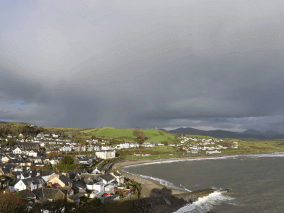
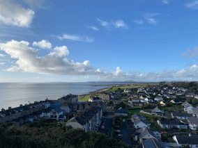
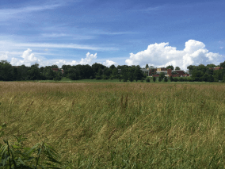
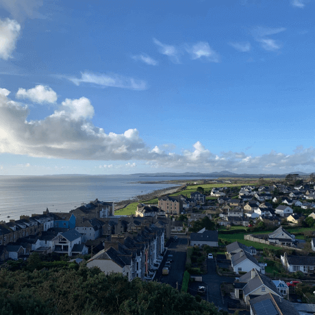
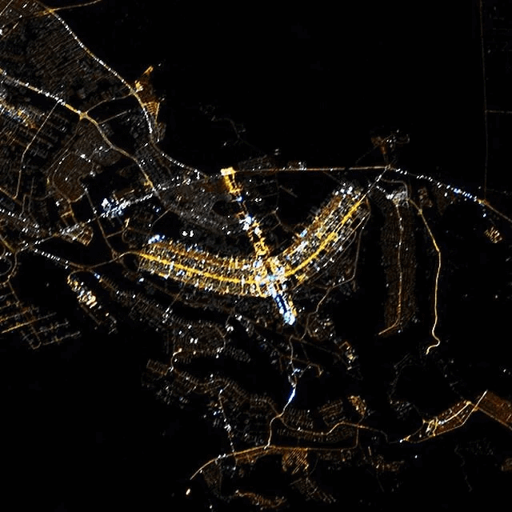

Conheça um pouco mais sobre a localização dos seus amigos virtuais
Cada pessoa é um artista livre, chamado a transformar as condições, pensamentos e estruturas que moldam nossas vidas.
A cidade de Practicum reuniu profissionais de diversos cantos do mundo. Hoje, a Galeria de Arte Practicum tem o orgulho de apresentar histórias e fotos de algumas das pessoas que dedicam seu tempo e esforço para fazer com que os futuros profissionais de tecnologia desta cidade se sintam em casa. Cada um de nós tem uma história única sobre o lugar de onde viemos. Sinta-se à vontade para adicionar sua própria história e uma obra de arte visual dedicada à sua cidade natal à nossa coleção. Não importa de onde você é, estamos felizes por você ser nosso vizinho.
- 
- 
-
![Foto colorida, com templo ao fundo, de três torres de abóbodas arredondadas com cruz de círculo no centro sobre elas, abaixo de céu com nuvens avermelhadas pela iluminação do sol. Abaixo na foto, há uma vegetação densa, atrás, um veículo utilitário de duas portas na traseira, ao lado desse veiculo e afrente do templo, uma casa azul e detalhes brancos e uma cerquinha de proteção em volta do telhado, vizinha de prédio de três andares, e telhado com laterais altas e janelas intervaladas no telhado. No lado direito, uma imensa parede revestida com mármore sujo e com limo nas juntas.](./imagesd/templo.png)
-
![Foto colorida de um dia nublado e acinzentado, com uma cidade grande ao centro, com prédios altos, cruzada por um rio caudaloso, que pode ser visto desde o horizonte ao longe, atrás da cidade, até a parte da frente mais próxima, com uma ponte unindo os dois lados da cidade. Próximo de onde a foto foi tirada, há vegetação com algumas árvores medianas. O tempo está nublado, o céu aparece em uma faixa de abertura das nuvens ao centro, no qual ocorrem pequenos reflexos do sol deixando pequenos pedaços de nuvens fracamente alaranjadas, as nuvens ao longo do horizonte estão cinzas.](./imagesd/ponte.png)
- 
-
![Foto colorida da histórica Taverna Boone, com uma calçada ao lado de um canteiro com árvores ao centro e cercado por plantas que bloqueiam o acesso de pedestres e animais ao canteiro, com altura por volta de meio metro e diâmetro, de cada moita de planta, possivelmente maior. Ao longo do canteiro, para frente da calçada, duas placas idênticas tem distância de alguns metros, entre elaas há um poste de iluminação de jardim, pouco maior que as plantas e posicionado rente a calçada. Os dizeres das placas, em inglês: 'green, vehicle parking, only, reserved for fuel efficient, and low emitting vehicles, hitoric boone tavern, hotel & restaurant’. Ela tem quatro divisões horizontais em retângulos, o primeiro com cor no fundo, branco e letras verdes, o segundo ao contrário com fundo verde e letras brancas e o terceiro como o primeiro e o quarto como o segundo. A calçada é de cor marrom clara decorada com contorno de ladrilhos retangulares de cor marrom escuro. Atrás desse canteiro e mais outros ao fundo, um muro branco, igual à edificação ao longo de toda foto, com janelas, e entrada, no canto esquerdo da foto, com beiral apoiado em pilares cilíndricos.](./imagesd/fachada.png)
-
![Foto colorida, um homem negro, de perfil, olhando para trás e apontando para uma placa, vestido com calça preta e camisa branca, sem gola, de manga longa, com punhos dobrados, sapato marrom-claro, usa óculos. A placa para a qual esse homem aponta é baixa, apoiada em uma fina estaca no chão, pintada de fundo branco e letras vermelhas com a escrita: 'INZY Y, UMWAW', a qual está na frente de uma Oca, uma residência tribal, com altura de cerca de três vezes ao do homem que está na entrada, esta entrada tem formato quadrangular, sem porta, dá para ver na parede da entrada a espessura da parede, que é mais grossa na base e na parte superior da entrada, mais fina, a oca tem formato cônico, a parte externa tem revestimento de palha cinza, a parede interna a palha tem cor de barro. Na entrada da oca há um degrau em que na parte da frente aparecem hexágonos quase circulares justapostos, lado a lado, formando a base do degrau. No degrau seguinte, aparecem retângulos de tijolos deitados, essa é a base do piso do interior da oca. No exterior, na entrada, abaixo do primeiro degrau, há uma calçada, que se bifurca, formando um triangulo entre a bifurcação dessas calçadas e a calçada da rua, essas calçadas são do mesmo material que aparece no primeiro degrau da oca, os hexágonos de cor de barro. Vizinha a essa oca, há outra que aparece parcialmente atrás de uma cerca de cipós trançados, formando um muro. Uma casa de alvenaria também aparece parcialmente, atrás da segunda oca, com janelas de vidro, e na parede acima delas cobogó (tijolos vazados). O telhado dessa casa é reto e cor alaranjada as paredes da casa tem cor creme alaranjada. No lado superior esquerdo, aparece galhos de uma árvore, que está sem folhas, no lado superior direito, há galhos de uma árvore com bastante folhas pequenas e verdes. O terreno afrente da oca e envolta das calçadas é gramado, e a grama está verde.](./imagesd/oca.png)
-
![Foto colorida, com uma montanha de floresta coníferas afrente de um conjunto de casas, três aparecem nitidamente, outras que ficam atrás destas, dá para ver parcialmente. Destas casas, duas ainda estão em construção, pois, não tem janelas e portas colocadas, a de trás, tem porta azul, que aparece parcialmente, devido ao declive do terreno. A construção que aparece na foto antes dela é uma meia água, o telhado cai apenas de um lado, tem duas janelas e uma porta, a anterior era com telhado em tesoura, queda de água de dois lados. Existem casas abaixo destas, com visão parcial de parte de telhados e paredes. A construção de casa mais ao centro da foto, é a mais sofisticada, com telhado com muitas quedas de água, uma triangular, com a parede abaixo com duas janelas e uma porta, outra queda de água com o formato de trapézio, a base menor em cima, a parede abaixo tem apenas uma janela ou porta, devido ao aclive do terreno não aparece a base da construção, então não é possível distinguir, mas nesse telhado acima dessa janela ou porta há uma formação de telhado em tesoura ajustado na queda em trapézio. Atrás da visão dessa casa, não da para distinguir se seria outra queda d'água desse telhado, ou outra casa, aparece apenas um retângulo de telhado. Essas casas estão em terreno inclinado, abaixo delas há bananeiras, plantações e roças na base da montanha. A cor das telhas é cinza-claro, nas sem portas e janelas, e cinza-escuro na que tem porta azul. O terreno perto de quem tirou a foto tem torrões de terra aparente, e, logo abaixo o terreno tem gramíneas ralas, essa é a descrição do terreno acima das casas. A montanha é predominantemente verde-escuro, com a copa das árvores apresentando um tom mais claro, a parte central dessa montanha apresenta vegetação menor, como que se recuperando de desmatamento. Ao fundo, no canto esquerdo da foto, outras montanhas distantes, com cor num tom azul-escuro. Entre a montanha afrente e as distantes, há um vale com uma parte desmatada. O céu parece nebuloso com cor cinza, mas é um dia claro.](./imagesd/montanha.png)
-
Kiev, Ucrânia
![Foto colorida de um dia nublado e acinzentado, com uma cidade grande ao centro, com prédios altos, cruzada por um rio caudaloso, que pode ser visto desde o horizonte ao longe, atrás da cidade, até a parte da frente mais próxima, com uma ponte unindo os dois lados da cidade. Próximo de onde a foto foi tirada, há vegetação com algumas árvores medianas. O tempo está nublado, o céu aparece em uma faixa de abertura das nuvens ao centro, no qual ocorrem pequenos reflexos do sol deixando pequenos pedaços de nuvens fracamente alaranjadas, as nuvens ao longo do horizonte estão cinzas.](./imagesd/kiev.png)
-
Artista
Natalia Dolgushina, produtora de conteúdo
Compre esta obra de arte como NFTKyev (ou Kiev), capital da Ucrânia, é uma grande cidade localizada às margens do rio Dnipro. É claro que ninguém em sã consciência nadaria no rio, a menos que tenha crescido lá, e nesse caso provavelmente já tentou em algum momento. Os verões são quentes aqui e os invernos são frios, mas o outono e a primavera são absolutamente incríveis.
A uma curta caminhada da estrada do castelo, você pode desfrutar do melhor sorvete do mundo no Cadwalader's, cujo ingrediente secreto, segundo rumores, são algas marinhas de origem local. Outra reivindicação à fama é o fato de que Criccieth ganhou o prêmio *Wales in Bloom* por cinco anos consecutivos por suas espetaculares exibições florais pela cidade. Foi também a casa de David Lloyd George, o único galês a ocupar o cargo de primeiro-ministro do Reino Unido.
-
-
Criccieth, País de Gales
-
Artistas
Steffan Warren, editor-chefe Kseniya Glagoleva, gerente de projeto
Compre esta obra de arte como NFTA ruína medieval do Castelo de Cricieth tem vista para a cidade abaixo de uma rocha que se projeta para o mar. Acredita-se que tenha sido construído por Llewelyn, o Grande, no século XIII. Cerca de 900 anos depois, a auto-intitulada *Pérola de Gales nas margens de Snowdonia* tornou-se um destino turístico popular durante os meses de verão.
A uma curta caminhada da estrada do castelo, você pode desfrutar do melhor sorvete do mundo no Cadwalader's, cujo ingrediente secreto, segundo rumores, são algas marinhas de origem local. Outra reivindicação à fama é o fato de que Criccieth ganhou o prêmio *Wales in Bloom* por cinco anos consecutivos por suas espetaculares exibições florais pela cidade. Foi também a casa de David Lloyd George, o único galês a ocupar o cargo de primeiro-ministro do Reino Unido.
-
-
Berea, EUA
![Foto colorida, da curva de uma rua de mão dupla, com faixa contínua no centro. Dois carros no sentido de ida estão distantes, e outro no sentido de vinda está mais distante ainda. A rua é ladeada por meio fio, grama e calçada. De um lado, casas térreas, com carros estacionados abaixo de árvores frondosas, em frente às casas. Rente a rua, afrente dessas casas, postes de iluminação, sem fiação aparente, e mais baixos que os postes de fiação. Do outro lado, os postes de fiação estão rente a rua, de alguns(dois), sai da metade do poste a haste de fixação de uma luminária. As casas que aparecem no outro lado da rua são térreas com telhado em tesoura, essas estão atrás do poste com uma placa que diz:
speed limit 35. A casa, com essa placa em frente dela, é mais sofisticada, em estilo americana com vários
telhados em V e muitas quedas d'água. Nela aparecem duas janelas cada uma com telhados, e a porta também.
Estacionados ao lado um trailer e um carro vermelho. Do lado de quem tirou a foto, só é visível a rua e a
entrada das garagens das casas, a calçada, que acompanha a rua, as árvores, e as plantas decorativas no
gramado afrente das casas(que não aparecem na foto). O céu está claro, azulado, com nuvens brancas
esparsas.](./imagesd/berea.png)
-
Artista
Travis Turner, autor e editor
Compre esta obra de arte como NFTBerea é uma pequena cidade localizada na parte central do Kentucky. A cidade é cercada por belas florestas e campos. É conhecida como a capital do artesanato do estado, e os visitantes encontrarão muitas oportunidades de compras: lojas com bijuterias artesanais, velas, artigos de madeira, galerias, ateliês de vidro e muito mais. A cidade realiza um festival anual que celebra o pão de colher , um prato local feito com pão de milho e servido com uma colher de pau.
No entanto, provavelmente é mais conhecido pela faculdade local. O Berea College foi fundado em 1855 e foi o primeiro colégio no sul a ser racialmente integrado, bem como o primeiro a ser misto. De forma um tanto singular, não cobra mensalidades - todo aluno recebe uma bolsa de estudos integral.
-
-
Muramvya, Burund
![Foto colorida, do monumento de entrada de uma cidade. Em meio a um gramado seco, cor de palha, está a base do monumento, em forma de uma estrela no chão com degraus coloridos, o primeiro, verde, o segundo, branco, o terceiro, vermelho, e mais um mais fino verde. No centro dessa estrela, ergue-se um pilar branco em forma de hexágono com arestas coloridas de vermelho e verde da metade para baixo, que tem uma divisão em vermelho. Acima desse pilar, ergue-se outro pilar menor com formato quadrangular branco com contorno verde, no centro há uma figura e dizeres em vermelho, mas não ha nitidez para descrever. Acima desse pilar, ergue-se um brasão, fino em comparação com o pilar. Sobre o brasão saem estruturas compatíveis com cabos de espadas, também não ha nitidez para descrever as figuras do brasão, com cor verde de contorno, branco de fundo, e centro, um retângulo em pé, cor escura. Ainda sobre a estrela, e, cercando o pilar em forma de círculo, três placas intercaladas com três estátuas com forma humana, essas, como se fosse papel recortado, de uma pessoa em pé, pernas juntas, braços estendidos em angulo de envergadura, unindo as pontas dos dedos à beira das placas, nas quais está escrito 'UBUMWE'. Atrás desse monumento, há uma edificação térrea com telhado em tesoura, uma porta dupla na parede em que o telhado se divide, e, na parede da queda d'água, quatro janelas. Essa edificação tem uma cerca viva e uma pequena árvore atrás, e, em frete um caminho calçado de pedras une o monumento à sua entrada. Copas grandes de árvores estão e em toda a extensão dessa edificação na parte de trás, de cor verde-escuro intenso. Ao lado dessa edificação, cor creme, telhado marrom-alaranjado, portas e janelas marrons, tem uma alta estrutura metálica de antena, tem uma pequena parabólica quase no topo. Ainda tem destaque nessa foto um poste de fiação, que recebe fios chegando do lado direito e do lado esquerdo da foto. O dia está ensolarado, o céu azul sem nuvens.](./imagesd/Muramvya.png)
-
Artista
Grevisse Kenguruka, editor técnico
Compre esta obra de arte como NFTMuramvya é uma das 18 províncias de Burundi. Na era do reino, Muramvya era a capital real e em 2007, por causa de sua paisagem cultural e natural, foi adicionada à Lista Provisória do Patrimônio Mundial da UNESCO. Está localizada no centro de Burundi, entre as capitais políticas e econômicas do país.
O clima é bastante frio à noite, mas durante o dia, você pensaria que está no céu. A 2.665 metros (8.743 pés) acima do nível do mar, o Monte Teza é um dos lugares mais frios da província. Mas essa brisa fresca permite uma das maiores plantações de chá e café do país, que representam a maior parte das exportações do Burundi.
O Parque Nacional de Kibira, uma das maiores reservas de vida selvagem para macacos, se sobrepõe a quatro províncias, incluindo Muramvya. Este Parque Nacional encontra-se no ápice das belas montanhas do Congo-Nile Divide, variando entre 1.550 e 2.660 metros de altitude. Está repleta de uma bela vegetação e fonte para os vários rios e riachos que fornecem água em todo o país.
-
-
Brasília, Brasil
-
Artista
Mara Lucia Menezes Thome, autora e editora
Compre esta obra de arte como NFTBrasília foi inaugurada em 21 de abril de 1960, pelo presidente Juscelino Kubitschek, está situada em Goias, na região Centro-oeste do Brasil. A construção da nova capital foi promessa de campanha desse presidente, e realizada em tempo recorde para os padrões daquela época.
A cidade foi planejada com o formato de um avião. Nas asas desse avião, asa norte e asa sul, estão as áreas residenciais e comerciais, e no centro está o eixo monumental, no qual se encontram a esplanada dos ministérios, culminando no final com a praça dos três poderes, com o Palácio do Planalto de um lado, Supremo Tribunal Federal do outro e Câmara e Senado no centro.
-